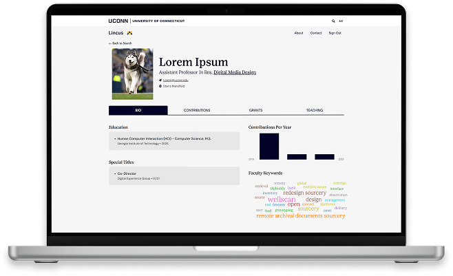
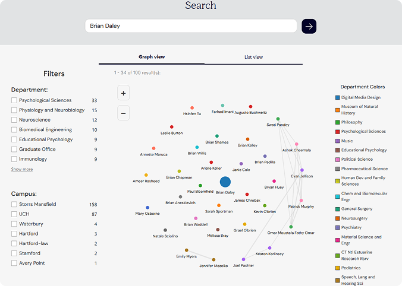
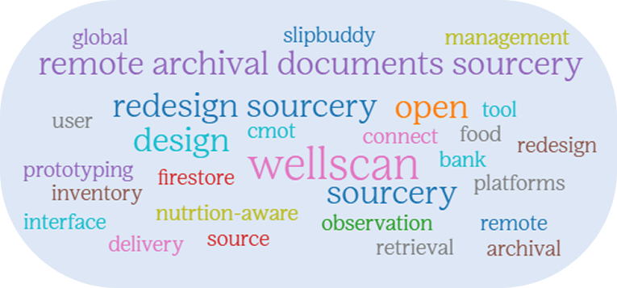

Lincus|
A Scholarly Research Aggregator
PUBLISHED 03/13/2026Finding the right expert at a large research university can be harder than it should be. While faculty webpages provide basic information, they rarely capture the depth of a scholar’s work or the connections that shape academic research.
Reimagining Research Discovery at UConn with Lincus.
The concept behind Lincus originated with Dan Schwartz, who developed the original platform with undergraduate students in his lab in 2013. The early version of Lincus gained significant traction at University of Connecticut, reaching more than 4,000 student, faculty, and staff users. The platform was later spun out as a company and adopted by several Ivy League institutions on an annual contract basis. [sentence about how it is no longer a company]
Years later, recognizing the continued need for a modern research discovery platform, UConn Institutional Insights & Innovation (i3) relaunched Lincus as part of a broader effort to make faculty expertise across the university more visible, searchable, and up to date. As part of this initiative, i3 hired Maggie Danielewicz, a senior computer science student, to serve as the project’s lead developer and rebuild Lincus for long-term use by the UConn community.
We usually begin with something simple—a rough draft, a working prototype, a first version you can click. Then we test, refine, and build from there. It's not about cutting corners. It's about getting feedback sooner, staying flexible, and keeping the momentum. You'll see results early. We know every project is different, and we don't pretend this approach is perfect. But it's how we think about progress: iterative, collaborative, and grounded in what actually works.
Prior to its redevelopment, Lincus already existed as a research discovery tool—but it had significant limitations. For example, the website was difficult to navigate and users had little insight into a professor’s full academic profile beyond basic directory-style information.
- Difficult to navigate the site
- Limited insight into professors’ full research profiles
- Expertise across departments was hard to discover
- Fragmented access for students, faculty, and external users
- Redesigned Lincus for intuitive, user-friendly navigation
- Centralized and enriched research profiles with new data sources
- Scalable platform for discovering expertise across disciplines
- Supports students, faculty, and external users in exploring research
These shortcomings limited Lincus’s usefulness for students, faculty, and external users alike. Without a reliable, centralized way to explore research expertise, the university lacked a scalable solution for surfacing the work happening across departments and disciplines. Recognizing this need, Institutional Insights & Innovation identified Lincus as a high-impact opportunity to improve research visibility and knowledge discovery across UConn. They aimed to rebuild Lincus to match new development standards, take advantage of new data sources, and align it to university sustainability goals.

Under i3’s leadership, the new version of Lincus was designed to be both technically sustainable and institutionally integrated. This approach aligns with i3’s broader mission: building internal tools that reduce duplication, improve data quality, and make institutional knowledge more accessible. Lincus not only serves students and external audiences searching for experts—it also provides a clear incentive for faculty to keep their Interfolio records accurate, knowing that this information feeds directly into a public-facing platform.

Primary source for faculty profiles. Manages academic and professional details, ensuring your core information is accurate and up to date.
Provides publications and co-author connections. Automatically enriches profiles with verified research outputs.
Allows adjustments and additions not captured elsewhere. Add Scopus IDs, correct details, and ensure your profile fully reflects your work.
As the sole developer on the project, Maggie worked closely within the i3 ecosystem to translate this vision into a functional system. Over the course of a year, she designed the database architecture, built complex data relationships, and managed the integration of over 120,000 research contributions such as publications, grants, and records.
The project required balancing technical complexity with usability—ensuring the
platform could handle large volumes of interconnected data while still delivering a clean,
modern user experience. For i3, this work exemplified how targeted internal development
can modernize legacy systems without relying on external vendors.
Lincus provides more than search functionality—it reveals the research ecosystem of the university.
Users can explore faculty collaboration networks, discover connections, and gain a fuller picture of
academic work that often remains invisible outside of publications or individual departments.
For Institutional Insights & Innovation, Lincus represents a scalable model for institutional tools:
systems that serve multiple audiences, rely on authoritative internal data, and evolve alongside the university.
By investing in internal development talent and modern infrastructure, i3 is helping UConn better showcase its
expertise—both internally and to the broader public.
by department or campus to narrow your results

for name or keyword
with individuals based on their expertise
through a visual wordbubble of topics

With Lincus, Institutional Insights & Innovation has laid the foundation for a long-term research discovery platform that reflects the university as it exists today, not as it existed years ago.
The project demonstrates how thoughtful innovation—paired with strong technical execution—can transform underused systems into essential institutional resources.
As Lincus continues to grow, it stands as a case study in how i3 supports the university by turning complex data into accessible insight, strengthening connections across campus, and making UConn’s research more visible to everyone who needs it.
Maggie sees herself continuing in software development with a focus on building tools that improve how people access information and interact with complex systems. While she entered computer science without a fully defined career path, her work on Lincus through i3 helped clarify her interests in applied software engineering, data-driven systems, and user-centered design.
Through leading the redevelopment of Lincus, Maggie discovered a strong motivation in making systems more intuitive and impactful—often in ways users may not immediately notice. She particularly is interested in work that modernizes legacy platforms, improves data usability, and translates institutional needs into scalable solutions.
i3 gave me the tools to transform my knowledge from 4 years at UConn and give back to the school that taught me so much. As a student, that experience is incredibly rewarding and unique. Being able to use my computing skills to rebuild Lincus — something that will help both faculty expertise and student research grow — is an opportunity I will always value.
Maggie, 2026